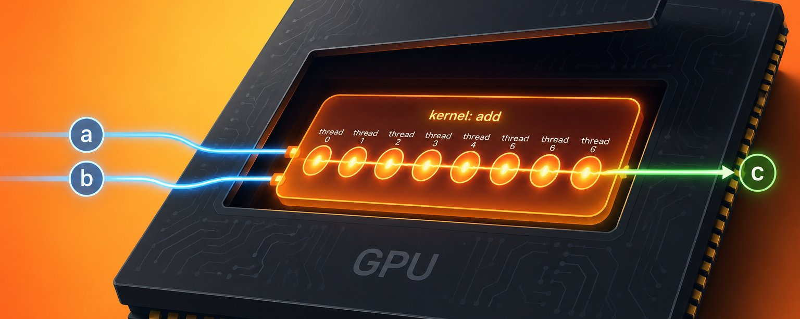
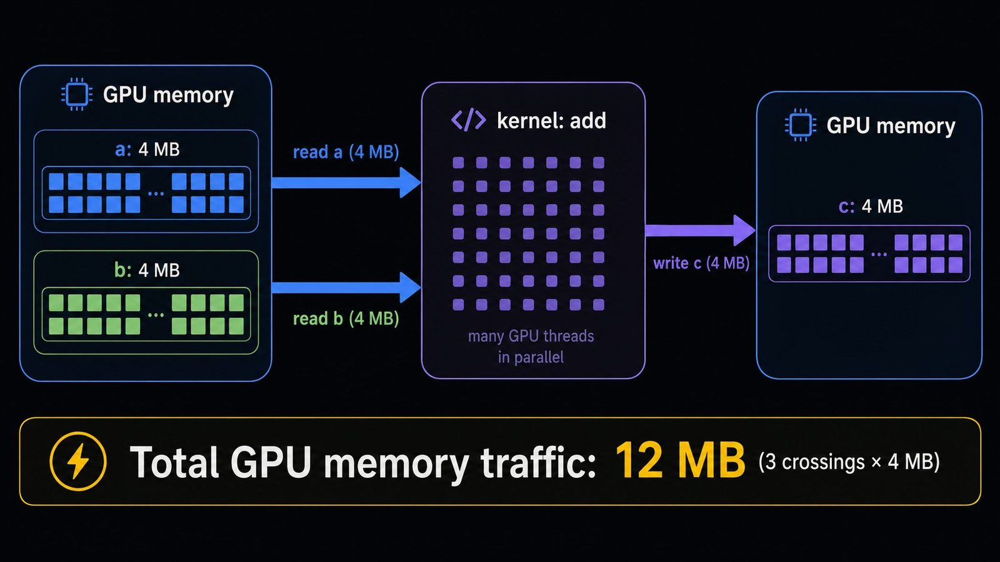
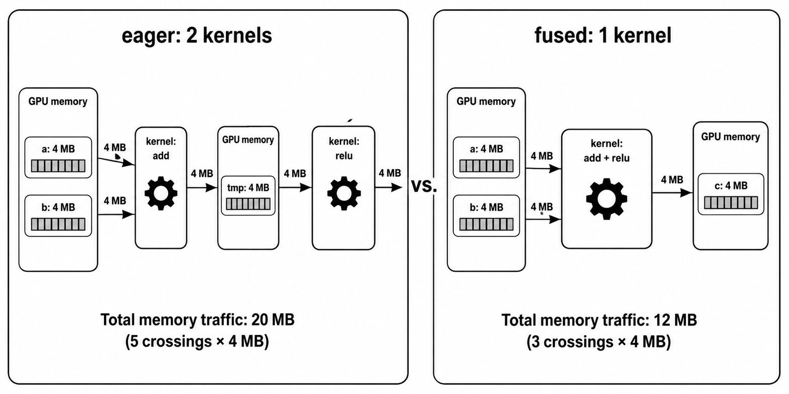
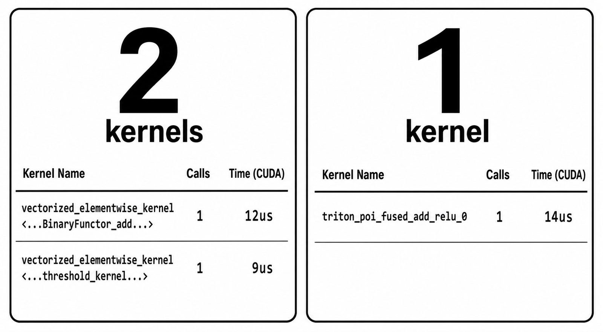

What even is a kernel?

Two numbers on a GPU
You already know how to do c = a + b in Python. You've done it a thousand times. Here we are going to talk about it in PyTorch tensors. A tensor is just an array of numbers. Putting it on a GPU means that array lives in the GPU’s memory instead of ordinary CPU memory. When a and b are two tensors on a GPU, that one line finishes fast enough that you never think about it.
Now shrink it. Say a and b are two single floats, both sitting on the GPU. Same line: c = a + b. What actually runs on the chip?
The answer is a kernel. In this world, a kernel is a small program the GPU runs on some piece of data. Not the OS kernel your laptop boots. Not the math kernel from a linear algebra textbook. The word gets reused a lot and that's not your fault. In GPU land, a kernel just means: a small function the GPU is told to go run, right now, in parallel, on the data you handed it.
By the end of this, you'll be able to look at a snippet of PyTorch code and count how many kernels the GPU will run. That sounds like a small trick, and it is, but it's also the first step to shaking the "GPU as black box" feeling, the one where your model is slow and you don't know why. Every question you can ask about GPU performance eventually comes back to "which kernels ran, and what were they doing." So this is where we start.
Your first kernel
Let's make a and b slightly bigger. Length-8 tensors this time. Still one PyTorch line: c = a + b.
When you run this, your CPU (the machine doing the actual Python) tells the GPU: hey, go run this program on this data. That instruction is called a launch. What gets launched is a kernel: one program, ready to run. Launches themselves are cheap, microseconds each. What's around the launch (the data going to the GPU, the results coming back) is where the real cost lives, and it's what we'll be counting as we go.
Inside the kernel, the actual work is done by tiny workers called threads. A GPU has thousands of them available. For our length-8 add, 8 threads pick up the work: thread 0 handles element 0, thread 1 handles element 1, and so on up to thread 7. Each thread runs the same tiny program: read one element of a, read the matching element of b, add them, write the result to c.
(In practice the GPU launches threads in fixed-size groups called warps, always 32 threads on NVIDIA cards, and masks off the extras when your array doesn't divide evenly. Safe to ignore for now.)
So we have one PyTorch line, one launch, one kernel, 8 threads doing 8 adds. Now let's count what actually crossed the chip. To do the add, each thread needs its element of a and its element of b. That's 8 reads of a and 8 reads of b. Then each thread writes its result to c. That's 8 writes.
Those reads and writes go to the big memory sitting right next to the GPU chip. On datacenter cards (A100, H100) that memory is called HBM (high-bandwidth memory). On consumer cards (RTX 4090) and the Colab-style T4s people are actually likely to try this on, it's called GDDR. Either way, it's fast memory sitting next to the chip, and we'll just call it GPU memory. It's fast, but it isn't free, and every trip to it costs something.
One kernel = one launch = one pass over the data. Whatever the kernel does inside its body, the reads and writes at its edges (the trips out to GPU memory to fetch inputs, the trip back to write outputs) are the part that costs. That's the whole shape.
None of this changes when the tensors get bigger. Same PyTorch line, same one kernel, just more threads. If a and b are a million elements each, the GPU launches the same kernel with a bigger swarm of threads. The math scales, the bytes moved scale, the mental model doesn't. One line, one kernel.

What happens between two ops
c = (a + b).relu()You know Python well enough to know this is two operations, an add and then a relu, chained. In an interpreter, that's two function calls. On a GPU, in eager PyTorch, that's two kernel launches: one for the add, one for the relu. So far, so unsurprising.
What's actually interesting is what happens between the two kernels.
When the add finishes, it has to put its result somewhere. That somewhere is GPU memory. The add writes a full intermediate array (call it tmp) out to memory. Then a moment later the relu launches, and its first job is to read that same tmp array back in from memory. It reads the whole thing, applies relu to each element, writes the result out to c.
Count the memory traffic for those two kernels:
- The add: reads
a, readsb, writestmp. Three array-sized transfers. - The relu: reads
tmp, writesc. Two more.
Five array-sized transfers in total. Compare that to the length-8 add all by itself from the previous section, which was three. Adding .relu() to the chain didn't just cost you the relu's compute. It cost you a full round trip of the array through GPU memory, because tmp had to be written out just so the next kernel could read it back in.
Nothing was cached. tmp didn't get to stay in a register or a fast local cache. It went out to GPU memory (the slow-and-far kind) and came right back. The two kernels are strangers to each other. They have to hand off data through the one medium they both know how to talk to: GPU memory.
Why does PyTorch do it this way? Because in eager mode, when you write a + b, PyTorch runs it now. It doesn't know you were about to call .relu() next. Each op is dispatched the moment its Python line executes. There's no plan, no lookahead. Every op stands on its own, produces a real array, and hands it off to whatever comes next through memory.
This is the pattern to hold onto. Every intermediate value in your PyTorch code gets physically written out to GPU memory and read back in by the next op. Every one. That's what "kernel count" really measures. Every extra kernel is another round trip your data has to make through GPU memory.
Fusion: two ops, one kernel
Imagine one kernel that does all of this in one go: reads its element of a, reads its element of b, adds them, applies relu to the result (all inside the kernel, on tiny per-thread scratch space that never leaves the chip), and only then writes the final value to c. The intermediate (a + b) still exists, but only inside the kernel, in each thread's private scratch space. It never gets written out to GPU memory. tmp, as a real array, doesn't exist at all.
Count the transfers now. Reads of a: 1 per element. Reads of b: 1 per element. Writes of c: 1 per element. Three array-sized transfers. Same math as the two-kernel version, but two fewer round trips.
At length 8, this is a rounding error. Nobody cares. At length 1 million, or 100 million, those extra round trips become a big chunk of the runtime, and the wall clock reflects it. Why memory traffic ends up dominating like that is the whole subject of Article 2 in this series, so I'll leave the "why" alone here. The point right now is just: same math, fewer trips, faster in practice.
That trick—combining ops that would've been separate kernels into a single kernel so the intermediate never has to visit GPU memory—has a name. It's called fusion. That's the whole word. That's the whole idea.
Now the awkward part. Writing that combined kernel by hand looks easy for add + relu. Two ops. One line of "compute" in the middle. But real PyTorch code has dozens of ops chained together, each with their own shapes and dtypes and broadcasting rules. Writing a fused kernel that handles all of that correctly is a real engineering job. You generally would not write these routine elementwise kernels by hand.
Good news: PyTorch ships a tool that does the rewrite for you, for exactly this kind of case, automatically. It's called torch.compile.
model = torch.compile(model)One line. Someone on the internet told you it makes things faster. Here's what it actually does, in plain English: instead of running your operations one at a time the way eager mode does, torch.compile captures the tensor operations your function performs, looks for opportunities to combine them, and generates optimized code. Later calls that match the same assumptions can reuse that code.
The fusion we did on paper above (add and relu, sharing one kernel, tmp never touching memory) is exactly the kind of thing torch.compile will do to your code automatically, as long as the ops are simple enough. When people say torch.compile "makes PyTorch faster," this is a huge part of what they mean.
For the cases torch.compile can't fuse on its own (custom ops it doesn't recognize, unusual reductions, weird memory layouts), someone still has to write a kernel by hand. That's what tools like Triton and CUDA are for. A separate article.

See it for yourself
Everything above has been counting kernels on paper. Time to count them on a real GPU. If you have any machine with a CUDA GPU handy (a workstation, a Colab notebook, a cloud instance), you can run this yourself in a few minutes.
The tool is torch.profiler. It's built into PyTorch. All it does is record what the GPU actually did while your code ran, and hand you back a table you can read.
Step 1: the eager version
import torch
from torch.profiler import profile, ProfilerActivity
def add_relu(a, b):
return (a + b).relu()
a = torch.randn(1_000_000, device="cuda")
b = torch.randn(1_000_000, device="cuda")
with profile(activities=[ProfilerActivity.CUDA]) as prof:
add_relu(a, b)
torch.cuda.synchronize()
print(prof.key_averages().table(sort_by="cuda_time_total", row_limit=10))torch.cuda.synchronize() is just there to make sure the GPU has finished before we read the timings. GPU work runs asynchronously, and without the sync you'd sometimes measure launch overhead instead of actual kernel work.
Step 2: read the output
Your actual profiler output will have more rows than you might expect. A bunch of memory-allocation and PyTorch bookkeeping lines will be mixed in. The rows we care about are the CUDA kernels, the actual functions the GPU ran. Look for rows with kernel in the name. The two of them will look roughly like this:
vectorized_elementwise_kernel<...BinaryFunctor_add...> 1 12us
vectorized_elementwise_kernel<...threshold_kernel...> 1 9usThe exact template names change between PyTorch versions (relu often shows up as threshold because that's the underlying op, and add sometimes as CUDAFunctor_add). Don't try to parse the whole thing. Just count rows. Two rows. Two kernels. One for the add, one for the relu. Exactly what we said would happen a section ago.
Step 3: the compiled version
One line change. Wrap the function in torch.compile:
compiled = torch.compile(add_relu)
# Warm-up call (first call compiles and generates code)
compiled(a, b)
torch.cuda.synchronize()
with profile(activities=[ProfilerActivity.CUDA]) as prof:
compiled(a, b)
torch.cuda.synchronize()
print(prof.key_averages().table(sort_by="cuda_time_total", row_limit=10))The first call to a torch.compiled function is slow because that's when torch.compile does its work: analyzing code, figuring out what to fuse, generating the fused kernel. So the pattern is: call it once to warm it up, throw the result away, then profile.
Step 4: read the output again
This time:
triton_poi_fused_add_relu_0 1 14usOne row. One kernel. The name even tells you what it did: fused add and relu. Same math as before, one launch instead of two.
You just did the thing this article has been talking about, in one sentence: you asked PyTorch to combine two ops into one kernel, watched the profiler, and confirmed the count went from two to one. Fusion, in the wild, on your machine.
If you want to see it more dramatically, try it at a few different tensor sizes. At length 100, both versions run so fast the difference gets lost in noise. At length 10 million or 100 million, the compiled version starts pulling clearly ahead, because the round trip we cut is a real chunk of the work at that scale. Counting kernels isn't abstract advice anymore. You have a way to check.

Let's wrap this up
Here's the whole thing in one shot:
Your PyTorch code, when it runs on a GPU, turns into a sequence of kernels. Each kernel is one launch, one pass over your data, one round trip through GPU memory to fetch inputs and write outputs. Simple ops become one kernel. Chains of ops become one kernel per op by default, with intermediates round-tripping through memory in between. torch.compile can fuse simple chains for you so those intermediates never touch memory. Fewer kernels usually means less memory traffic. And less memory traffic usually means faster.